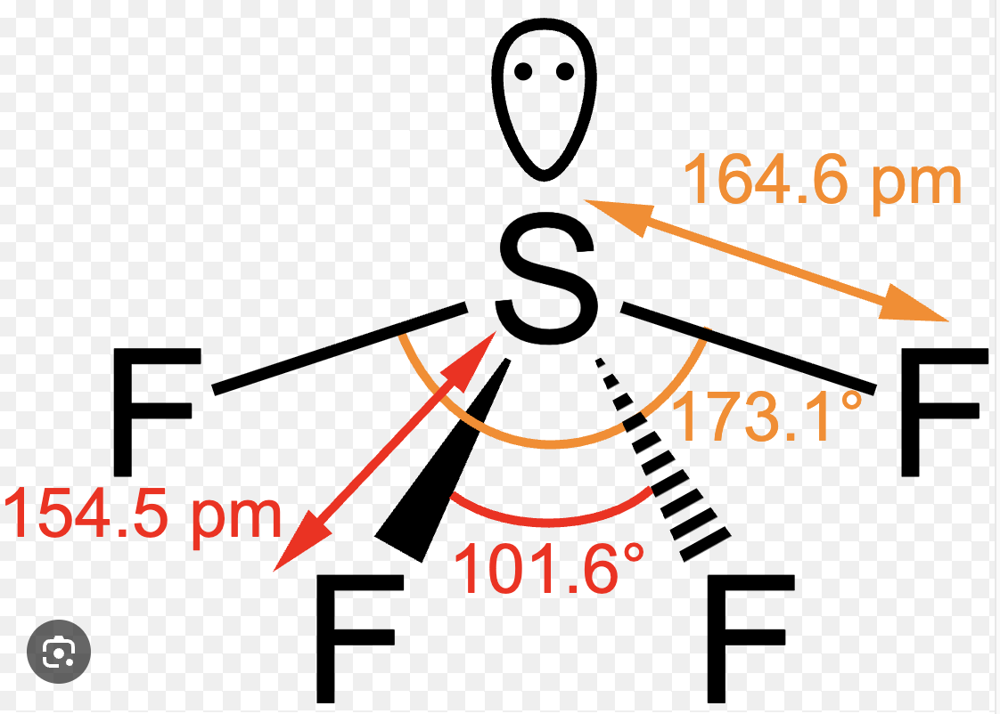

Why?
Given electron gain enthalpy values:
More negative electron gain enthalpy means greater tendency to accept an electron.
Known standard values/trends:
So:
Hence the correct option is (b) \(\mathrm{Cl,\ S,\ I}\).
Core theory
What is electron gain enthalpy?
Electron gain enthalpy is the enthalpy change when an isolated gaseous atom gains an electron:
\(\mathrm{X(g) + e^- \rightarrow X^-(g)}\)
This is exactly what the textbook line means:
“More the value of electron gain enthalpy, greater is the tendency to gain electron.”
In proper exam language for such values, this usually means:
Because \(-349\) indicates a stronger tendency to gain electron than \(-295\), and both indicate a stronger tendency than \(-200\).
NCERT/JEE trend behind this question
This question belongs to the periodic trend of electron gain enthalpy.
Across a period
In general, electron gain enthalpy becomes more negative from left to right.
Reason:
So non-metals usually have more negative values than metals.
Down a group
In general, electron gain enthalpy becomes less negative down the group.
Reason:
So among halogens:
\(\mathrm{F,\ Cl,\ Br,\ I}\)
the general expectation is highly negative values, but the detailed order is:
\(\mathrm{Cl > F > Br > I}\)
in terms of magnitude of negativity.
Equivalent numerical-style statement:
\(\Delta_{\mathrm{eg}}H(\mathrm{Cl}) < \Delta_{\mathrm{eg}}H(\mathrm{F}) < \Delta_{\mathrm{eg}}H(\mathrm{Br}) < \Delta_{\mathrm{eg}}H(\mathrm{I})\)
if you compare algebraic values, because more negative means smaller numerically.
For exams, the most useful memory point is:
\(\mathrm{Cl}\) has the most negative electron gain enthalpy among halogens.
Important exception: Why is \(\mathrm{Cl}\) more negative than \(\mathrm{F}\)?
This is a classic NCERT/JEE exception.
One may think fluorine should have the most negative value because it is the smallest halogen. But actually \(\mathrm{Cl}\) is more negative than \(\mathrm{F}\).
Reason:
Fluorine is very small, so the incoming electron enters a very compact \(2p\) orbital. That small space causes strong electron-electron repulsion.
In chlorine, the incoming electron enters a larger \(3p\) orbital, where repulsion is lower.
So although fluorine is smaller, the added electron experiences more crowding. Hence:
\(\mathrm{Cl}\) has more negative electron gain enthalpy than \(\mathrm{F}\).
This is one of the most tested exceptions.
Why sulfur fits \(-200\)
Sulfur is a chalcogen, not a halogen. It has a fairly negative electron gain enthalpy, but not as negative as chlorine or iodine.
Why?
So sulfur’s value is negative, but not as extreme as that of halogens.
That is why:
Option elimination logic
(a) \(\mathrm{Cl,\ I,\ S}\)
So this is wrong.
(b) \(\mathrm{Cl,\ S,\ I}\)
This matches perfectly. So this is correct.
(c) \(\mathrm{S,\ Se,\ Te}\)
These values do not fit the given pattern, especially \(-349\), which is much more characteristic of chlorine.
So this is wrong.
(d) \(\mathrm{Na,\ K,\ Rb}\)
Alkali metals have very low tendency to gain electrons. Their electron gain enthalpy values are not highly negative like these.
So this is wrong.
One-minute exam method
Spot the most negative value: \(-349\).
Ask: which common element has very high negative electron gain enthalpy?
Answer: \(\mathrm{Cl}\)
So \(X = \mathrm{Cl}\).
Now only options with \(X = \mathrm{Cl}\) remain:
Compare the other two values:
Among \(\mathrm{I}\) and \(\mathrm{S}\), iodine has more negative electron gain enthalpy than sulfur.
So:
Hence the correct answer is (b).
Intuitive shortcut
A very useful memory ladder here is:
\(\mathrm{Cl > I > S}\)
in tendency to gain electron among the three given here.
So match:
That directly gives:
\(-349 \rightarrow \mathrm{Cl},\quad -295 \rightarrow \mathrm{I},\quad -200 \rightarrow \mathrm{S}\)
JEE/NCERT-linked conceptual points to remember
Electron gain enthalpy vs electronegativity
Do not confuse them.
They are related, but they are not the same property.
More negative means more favorable
Students often get confused because the numerical value becomes smaller algebraically.
\(-349 < -295 < -200\)
But in tendency to gain electron:
\(\mathrm{Cl > I > S}\)
because more negative means more energy released, hence more favorable.
Halogens are especially important
Halogens generally have highly negative electron gain enthalpy because they need just one electron to complete octet.
That is why if you see a value around \(-300\) or more negative, think first of a halogen.
Exceptions are crucial
For JEE/NCERT, these exceptions matter a lot:
The reason in both cases is similar:
Chapter / Topic / Subtopic
Final answer in exam style
Given:
\(X = -349,\quad Y = -200,\quad Z = -295\ \mathrm{kJ\ mol^{-1}}\)
More negative electron gain enthalpy means greater tendency to gain electron.
Among the given elements:
Therefore:
\(X = \mathrm{Cl},\quad Y = \mathrm{S},\quad Z = \mathrm{I}\)
So the correct answer is:
\((b)\ \mathrm{Cl,\ S,\ I}\)
Answer: \((c)\ 5, 3\)
Given molecules: \(\mathrm{NH_3,\ BF_3,\ NF_3,\ H_2S,\ CO_2,\ CH_4,\ CHCl_3,\ H_2O}\)
Core theory:
Stepwise classification:
Hence:
Count:
Therefore, the correct answer is \((c)\ 5, 3\).
JEE / NCERT takeaway:
1-minute solving tip:
Chapter / Topic / Subtopic:
Lecture references (FYI):
Answer: \((c)\ \mathrm{SF_4}\)
Solution:
The molecule is said to have:
\(\text{see-saw shape}\)
and central atom with:
\(sp^3d\) hybridisation
This means the central atom has five electron pairs arranged in a trigonal bipyramidal electron-pair geometry.
For \(sp^3d\) hybridisation, the steric number is \(5\).
Possible shapes are:
So a see-saw molecule must be of the type:
\(\mathrm{AX_4E}\)
that is, 4 bond pairs and 1 lone pair around the central atom.
Therefore the correct answer is:
\(\boxed{(c)\ \mathrm{SF_4}}\)
Why \(\mathrm{SF_4}\) is see-saw:
Helpful diagram:

JEE / NCERT theory to remember:
\(\mathrm{LP-LP > LP-BP > BP-BP}\)
Important shape summary for \(sp^3d\):
1-minute solving trick:
\(\text{see-saw shape}\) and \(sp^3d\)
How to solve intuitively in exams:
Common mistakes to avoid:
\(\mathrm{ClF_3}\) and \(\mathrm{SF_4}\)
Chapter / Topic / Subtopic:
Final exam-style answer:
See-saw shape corresponds to \(\mathrm{AX_4E}\) type with trigonal bipyramidal electron-pair arrangement and \(sp^3d\) hybridisation.
Among the given options:
Therefore, the correct answer is:
\(\boxed{(c)\ \mathrm{SF_4}}\)
Quick cheatsheet:
\(5\) electron domains
see-saw
T-shape
linear
\(\mathrm{SF_4}\) is the classic see-saw molecule
Answer: \((d)\ 4.8,\ 2\)
Solution:
When the stop cock is opened, both ideal gases mix and occupy the total volume:
\(V_{\text{total}} = 12 + 8 = 20\ \mathrm{L}\)
Since temperature is constant, for each gas:
\(n = \frac{pV}{RT}\)
After mixing, each gas spreads through the full volume \(20\ \mathrm{L}\), so its partial pressure is:
\(p_i = \frac{n_iRT}{V_{\text{total}}}\)
For gas \(A\):
\(n_A = \frac{p_AV_A}{RT} = \frac{8 \times 12}{RT} = \frac{96}{RT}\)
For gas \(B\):
\(n_B = \frac{p_BV_B}{RT} = \frac{5 \times 8}{RT} = \frac{40}{RT}\)
Total moles:
\(n_{\text{total}} = \frac{96}{RT} + \frac{40}{RT} = \frac{136}{RT}\)
Using ideal gas equation for the mixture:
\(p_{\text{total}} = \frac{n_{\text{total}}RT}{V_{\text{total}}}\)
\(p_{\text{total}} = \frac{136}{20} = 6.8\ \mathrm{atm}\)
For a gas mixture:
\(p_i = x_i\,p_{\text{total}} = \frac{n_i}{n_{\text{total}}} \, p_{\text{total}}\)
For gas \(A\):
\(p_A = \frac{96}{136}\times 6.8 = 4.8\ \mathrm{atm}\)
For gas \(B\):
\(p_B = \frac{40}{136}\times 6.8 = 2.0\ \mathrm{atm}\)
Therefore:
\(\boxed{p_A = 4.8\ \mathrm{atm},\quad p_B = 2.0\ \mathrm{atm}}\)
So the correct option is \((d)\).
Faster direct method:
At constant temperature, when a gas expands into a new total volume, its final partial pressure becomes:
\(p_i' = \frac{p_iV_i}{V_{\text{total}}}\)
\(p_A' = \frac{8 \times 12}{20} = 4.8\ \mathrm{atm}\)
\(p_B' = \frac{5 \times 8}{20} = 2.0\ \mathrm{atm}\)
This is the quickest way in this question.
Why this method works:
\(p_i^{\text{initial}}V_i = p_i^{\text{final}}V_{\text{total}}\)
\(p_i^{\text{final}} = \frac{p_i^{\text{initial}}V_i}{V_{\text{total}}}\)
JEE / NCERT takeaway:
\(pV = nRT\)
\(p_{\text{total}} = p_1 + p_2 + p_3 + \cdots\)
\(p_i = x_i p_{\text{total}}\)
\(x_i = \frac{n_i}{n_{\text{total}}}\)
1-minute solving trick:
\(p_i' = \frac{p_iV_i}{V_{\text{total}}}\)
\(8 \times \frac{12}{20} = 4.8\)
\(5 \times \frac{8}{20} = 2\)
More intuitive way to think:
Common mistakes to avoid:
\(8+5\neq\) final total pressure
because initial volumes are different.
Chapter / Topic / Subtopic:
Final exam-style answer:
Total volume after opening stop cock:
\(V = 12 + 8 = 20\ \mathrm{L}\)
At constant temperature, final partial pressure of each gas is:
\(p_i' = \frac{p_iV_i}{V}\)
So:
\(p_A = \frac{8 \times 12}{20} = 4.8\ \mathrm{atm}\)
\(p_B = \frac{5 \times 8}{20} = 2.0\ \mathrm{atm}\)
Therefore, the partial pressures of \(A\) and \(B\) respectively are:
\(\boxed{4.8\ \mathrm{atm},\ 2.0\ \mathrm{atm}}\)
Correct option: \(\boxed{(d)}\)
Quick cheatsheet:
\(pV=nRT\)
\(p_{\text{total}} = \sum p_i\)
\(p_i = x_i p_{\text{total}}\)
\(x_i = \frac{n_i}{n_{\text{total}}}\)
\(p_i' = \frac{p_iV_i}{V_{\text{total}}}\)
\(20\ \mathrm{L}\)
Answer: \((b)\ \frac{6x}{5}\)
Solution:
This is a redox stoichiometry question. We compare how many electrons are accepted by one mole of each oxidising agent in acidic medium.
\(\mathrm{Fe^{2+} \rightarrow Fe^{3+} + e^-}\)
So, one mole of \(\mathrm{Fe^{2+}}\) loses one electron.
In acidic medium:
\(\mathrm{MnO_4^- + 8H^+ + 5e^- \rightarrow Mn^{2+} + 4H_2O}\)
Hence, one mole of \(\mathrm{MnO_4^-}\) gains \(5\) moles of electrons.
Since each mole of \(\mathrm{Fe^{2+}}\) gives only one electron, one mole of acidified \(\mathrm{MnO_4^-}\) oxidises \(5\) moles of \(\mathrm{Fe^{2+}}\).
But the question says this number is \(x\).
In acidic medium:
\(\mathrm{Cr_2O_7^{2-} + 14H^+ + 6e^- \rightarrow 2Cr^{3+} + 7H_2O}\)
Hence, one mole of \(\mathrm{Cr_2O_7^{2-}}\) gains \(6\) moles of electrons.
So, one mole of acidified \(\mathrm{Cr_2O_7^{2-}}\) oxidises \(6\) moles of \(\mathrm{Fe^{2+}}\).
If \(5\) moles of \(\mathrm{Fe^{2+}}\) correspond to \(x\), then \(6\) moles correspond to:
\(\frac{6}{5}x\)
Therefore, the required number of moles is:
\(\boxed{\frac{6x}{5}}\)
Therefore:
\(\boxed{(b)\ \frac{6x}{5}}\)
Why this method works:
\(\mathrm{Fe^{2+} \rightarrow Fe^{3+} + e^-}\)
\(5 : 6\)
JEE / NCERT takeaway:
\(\mathrm{MnO_4^- \rightarrow Mn^{2+}}\) involves gain of \(5e^-\)
\(\mathrm{Cr_2O_7^{2-} \rightarrow 2Cr^{3+}}\) involves gain of \(6e^-\)
\(\mathrm{Fe^{2+} \rightarrow Fe^{3+} + e^-}\)
Quick intuitive idea:
\(6:5\)
\(\boxed{\frac{6x}{5}}\)
1-minute solving trick:
\(\frac{6x}{5}\)
Common mistakes to avoid:
Chapter / Topic / Subtopic:
Final exam-style answer:
In acidic medium:
\(\mathrm{MnO_4^- + 8H^+ + 5e^- \rightarrow Mn^{2+} + 4H_2O}\)
So, one mole of \(\mathrm{MnO_4^-}\) oxidises \(5\) moles of \(\mathrm{Fe^{2+}}\).
Given this number is \(x\).
Also:
\(\mathrm{Cr_2O_7^{2-} + 14H^+ + 6e^- \rightarrow 2Cr^{3+} + 7H_2O}\)
So, one mole of \(\mathrm{Cr_2O_7^{2-}}\) oxidises \(6\) moles of \(\mathrm{Fe^{2+}}\).
Hence, required number of moles \(=\frac{6}{5}x\).
\(\boxed{(b)\ \frac{6x}{5}}\)
Quick cheatsheet:
\(\mathrm{Fe^{2+} \rightarrow Fe^{3+} + e^-}\)
\(\mathrm{MnO_4^- \rightarrow Mn^{2+}}\)
\(5e^-\) gain
\(\mathrm{Cr_2O_7^{2-} \rightarrow 2Cr^{3+}}\)
\(6e^-\) gain
\(\text{moles of Fe}^{2+}\text{ oxidised} = \text{electrons accepted by oxidant}\)
\(5:6\)
Answer: \((a)\ 5.73\)
Solution:
For an isothermal reversible expansion of an ideal gas, the work done is:
\(w = -nRT \ln\left(\frac{V_2}{V_1}\right)\)
Since the process is isothermal for an ideal gas, \(p_1V_1 = p_2V_2\). Therefore:
\(\frac{V_2}{V_1} = \frac{p_1}{p_2}\)
So the work expression can also be written as:
\(w = -nRT \ln\left(\frac{p_1}{p_2}\right)\)
or equivalently,
\(w = -nRT \ln\left(\frac{p_2}{p_1}\right)\) with the negative sign handled accordingly.
\(w = -nRT \ln\left(\frac{p_1}{p_2}\right)\)
Substituting values:
\(w = -(1)(8.3)(300)\ln\left(\frac{20}{2}\right)\)
\(w = -2490\ln(10)\)
\(w = -2490 \times 2.303\)
\(w \approx -5734.47\ \mathrm{J\ mol^{-1}}\)
\(w \approx -5.73\ \mathrm{kJ\ mol^{-1}}\)
The question says work done by the gas is \(-x\ \mathrm{kJ\ mol^{-1}}\).
So:
\(-x = -5.73\)
Hence:
\(x = 5.73\)
Therefore:
\(\boxed{(a)\ 5.73}\)
Why this method works:
\(\Delta U = 0\)
\(w = -nRT\ln\left(\frac{V_2}{V_1}\right)\)
\(p_1V_1 = p_2V_2\)
\(\frac{V_2}{V_1} = \frac{p_1}{p_2}\)
JEE / NCERT takeaway:
\(\Delta T = 0\)
\(\Delta U = 0\)
\(\Delta U = q + w\)
\(q = -w\)
\(w = -nRT\ln\left(\frac{V_2}{V_1}\right)\)
\(w = -nRT\ln\left(\frac{p_1}{p_2}\right)\)
1-minute solving trick:
\(w = -nRT\ln\left(\frac{p_1}{p_2}\right)\)
\(\frac{p_1}{p_2} = \frac{20}{2} = 10\)
\(\ln 10 = 2.303\)
\(w = -(1)(8.3)(300)(2.303)\)
\(8.3 \times 300 = 2490\)
\(2490 \times 2.303 \approx 5730\ \mathrm{J}\)
\(5.73\ \mathrm{kJ}\)
More intuitive idea:
Common mistakes to avoid:
Chapter / Topic / Subtopic:
Final exam-style answer:
For isothermal reversible expansion of an ideal gas:
\(w = -nRT\ln\left(\frac{p_1}{p_2}\right)\)
Substituting:
\(w = -(1)(8.3)(300)\ln\left(\frac{20}{2}\right)\)
\(w = -(8.3)(300)\ln(10)\)
\(w = -2490 \times 2.303\)
\(w \approx -5730\ \mathrm{J\ mol^{-1}}\)
\(w \approx -5.73\ \mathrm{kJ\ mol^{-1}}\)
Hence, \(-x = -5.73\), so:
\(\boxed{x = 5.73}\)
Correct option: \(\boxed{(a)}\)
Quick cheatsheet:
\(pV = nRT\)
\(\Delta U = 0\)
\(w = -nRT\ln\left(\frac{V_2}{V_1}\right)\)
\(w = -nRT\ln\left(\frac{p_1}{p_2}\right)\)
\(\ln 10 = 2.303\)
\(1\ \mathrm{kJ} = 1000\ \mathrm{J}\)
Answer: \((c)\ 0.636\)
Solution:
Given equilibrium reaction:
\(\mathrm{CO_2(g) + H_2(g) \rightleftharpoons CO(g) + H_2O(g)}\)
At \(1000\ \mathrm{K}\),
\(K = 0.53\)
Since the vessel volume is \(1\ \mathrm{L}\), the numerical values of moles and molar concentrations are the same.
For the reaction
\(\mathrm{CO_2 + H_2 \rightleftharpoons CO + H_2O}\)
the equilibrium constant is:
\(K_c = \frac{[\mathrm{CO}][\mathrm{H_2O}]}{[\mathrm{CO_2}][\mathrm{H_2}]}\)
\(0.53 = \frac{(0.25)(x)}{(0.50)(0.60)}\)
\(0.53 = \frac{0.25x}{0.30}\)
\(0.53 \times 0.30 = 0.25x\)
\(0.159 = 0.25x\)
\(x = \frac{0.159}{0.25}\)
\(x = 0.636\)
Therefore:
\(\boxed{x = 0.636}\)
So the correct option is \((c)\).
Why this method works:
\(aA + bB \rightleftharpoons cC + dD\)
\(K_c = \frac{[C]^c[D]^d}{[A]^a[B]^b}\)
\(K_c = \frac{[\mathrm{CO}][\mathrm{H_2O}]}{[\mathrm{CO_2}][\mathrm{H_2}]}\)
JEE / NCERT takeaway:
At equilibrium, the ratio of product concentrations to reactant concentrations, each raised to their stoichiometric coefficients, is constant at a fixed temperature.
\(K_c = \frac{\text{product terms}}{\text{reactant terms}}\)
\(\text{moles} = \text{molarity numerically}\)
More intuitive view:
\(\frac{[\mathrm{CO}][\mathrm{H_2O}]}{[\mathrm{CO_2}][\mathrm{H_2}]}\)
must become \(0.53\).1-minute solving trick:
\([\mathrm{CO}] = 0.25,\ [\mathrm{CO_2}] = 0.5,\ [\mathrm{H_2}] = 0.6,\ [\mathrm{H_2O}] = x\)
\(0.53 = \frac{0.25x}{0.5 \times 0.6}\)
\(0.53 = \frac{0.25x}{0.3}\)
\(x = \frac{0.53 \times 0.3}{0.25}\)
\(0.53 \times 0.3 = 0.159\)
\(\frac{0.159}{0.25} = 0.636\)
Common mistakes to avoid:
\(\frac{[\mathrm{CO_2}][\mathrm{H_2}]}{[\mathrm{CO}][\mathrm{H_2O}]}\)
would be incorrect for the given \(K\).\(0.5 \times 0.6 = 0.3\)
Chapter / Topic / Subtopic:
Final exam-style answer:
For the reaction
\(\mathrm{CO_2(g) + H_2(g) \rightleftharpoons CO(g) + H_2O(g)}\)
the equilibrium constant expression is:
\(K_c = \frac{[\mathrm{CO}][\mathrm{H_2O}]}{[\mathrm{CO_2}][\mathrm{H_2}]}\)
Since the vessel is \(1\ \mathrm{L}\):
\([\mathrm{CO}] = 0.25,\ [\mathrm{CO_2}] = 0.5,\ [\mathrm{H_2}] = 0.6,\ [\mathrm{H_2O}] = x\)
Thus:
\(0.53 = \frac{0.25x}{0.5 \times 0.6}\)
\(0.53 = \frac{0.25x}{0.3}\)
\(0.25x = 0.159\)
\(x = 0.636\)
\(\boxed{(c)\ 0.636}\)
Quick cheatsheet:
\(aA + bB \rightleftharpoons cC + dD\)
\(K_c = \frac{[C]^c[D]^d}{[A]^a[B]^b}\)
\(K_c = \frac{[\mathrm{CO}][\mathrm{H_2O}]}{[\mathrm{CO_2}][\mathrm{H_2}]}\)
\(\text{moles} = \text{molarity numerically}\)
\(x = \frac{0.53 \times 0.5 \times 0.6}{0.25} = 0.636\)
Answer: \((a)\ \text{A-III, B-IV, C-I, D-II}\)
Solution:
\(\mathrm{Mg(HCO_3)_2 \longrightarrow Mg(OH)_2 \downarrow + 2CO_2 \uparrow}\)
This is removal of temporary hardness by boiling. On heating, magnesium bicarbonate decomposes and insoluble \(\mathrm{Mg(OH)_2}\) separates out.
So, A \(\rightarrow\) III.
\(\mathrm{M^{2+} + Na_4P_6O_{18}^{2-} \longrightarrow [Na_2MP_6O_{18}]^{2-} + 2Na^+}\)
Here \(\mathrm{M^{2+}}\) represents hardness-causing ions like \(\mathrm{Ca^{2+}}\) or \(\mathrm{Mg^{2+}}\). They are converted into a soluble complex by sodium hexametaphosphate, called Calgon.
So, B \(\rightarrow\) IV.
\(\mathrm{Ca(HCO_3)_2 + Ca(OH)_2 \longrightarrow 2CaCO_3 \downarrow + 2H_2O}\)
Addition of \(\mathrm{Ca(OH)_2}\) removes bicarbonate hardness by precipitating \(\mathrm{CaCO_3}\). This is Clark's method.
So, C \(\rightarrow\) I.
\(\mathrm{2NaZ + Ca^{2+}(aq) \longrightarrow 2Na^+ + CaZ}\)
\(\mathrm{(Z = Zeolite)}\)
Sodium zeolite exchanges its \(\mathrm{Na^+}\) ions with hardness-producing \(\mathrm{Ca^{2+}}\) ions. This is the ion exchange method.
So, D \(\rightarrow\) II.
Therefore:
\(\boxed{\text{A-III, B-IV, C-I, D-II}}\)
\(\boxed{(a)}\)
Why this question is easy once the methods are recognized:
JEE / NCERT theory you should know:
\(\mathrm{Ca(HCO_3)_2 + Ca(OH)_2 \longrightarrow 2CaCO_3 \downarrow + 2H_2O}\)
\(\mathrm{Mg(HCO_3)_2 + 2Ca(OH)_2 \longrightarrow Mg(OH)_2 \downarrow + 2CaCO_3 \downarrow + 2H_2O}\)
\(\mathrm{2NaZ + Ca^{2+} \longrightarrow CaZ + 2Na^+}\)
\(\mathrm{2NaZ + Mg^{2+} \longrightarrow MgZ + 2Na^+}\)
1-minute solving trick:
Common mistakes to avoid:
Quick memory map:
Chapter / Topic / Subtopic:
Final exam-style answer:
\(\mathrm{Mg(HCO_3)_2}\) on heating gives \(\mathrm{Mg(OH)_2}\), so A corresponds to boiling \(\Rightarrow\) A-III.
\(\mathrm{M^{2+}}\) forms complex with \(\mathrm{Na_4P_6O_{18}^{2-}}\), so B corresponds to Calgon method \(\Rightarrow\) B-IV.
\(\mathrm{Ca(HCO_3)_2 + Ca(OH)_2 \longrightarrow 2CaCO_3 + 2H_2O}\), so C corresponds to Clark's method \(\Rightarrow\) C-I.
\(\mathrm{2NaZ + Ca^{2+} \longrightarrow 2Na^+ + CaZ}\) is ion exchange \(\Rightarrow\) D-II.
Hence, \(\boxed{\text{A-III, B-IV, C-I, D-II}}\), so the correct option is \(\boxed{(a)}\).
Answer: \((b)\) Statement I is correct, but Statement II is not correct.
Solution:
Statement I says: Both \(\mathrm{LiF}\) and \(\mathrm{CsI}\) have low solubility in water.
This is correct.
So, Statement I is correct.
Statement II says that low solubility of \(\mathrm{LiF}\) is due to smaller hydration enthalpy and that of \(\mathrm{CsI}\) is due to high lattice enthalpy.
This is reversed, so it is incorrect.
So, Statement II is not correct.
Statement I is correct, but Statement II is not correct.
Therefore, the correct answer is \(\boxed{(b)}\).
Core theory behind this question:
\(\text{Lattice enthalpy}\)
and
\(\text{Hydration enthalpy}\)
Why \(\mathrm{LiF}\) has low solubility:
Why \(\mathrm{CsI}\) has low solubility:
Correct conceptual statement:
Low solubility of \(\mathrm{LiF}\) in water is due to its high lattice enthalpy, and low solubility of \(\mathrm{CsI}\) in water is due to its smaller hydration enthalpy.
JEE / NCERT takeaway:
higher lattice enthalpy and higher hydration enthalpy
but in \(\mathrm{LiF}\), lattice enthalpy dominates.
lower lattice enthalpy and lower hydration enthalpy
but for salts like \(\mathrm{CsI}\), very low hydration enthalpy becomes important.
Intuition shortcut:
\(\mathrm{LiF}\) \(\rightarrow\) think lattice enthalpy
\(\mathrm{CsI}\) \(\rightarrow\) think hydration enthalpy
1-minute solving trick:
Statement I correct, Statement II incorrect \(\Rightarrow\) \(\boxed{(b)}\)
Common mistakes to avoid:
Quick comparison table:
| Salt | Main reason for low solubility |
|---|---|
| \(\mathrm{LiF}\) | High lattice enthalpy |
| \(\mathrm{CsI}\) | Small hydration enthalpy |
Useful trend summary:
Chapter / Topic / Subtopic:
Final exam-style answer:
Both \(\mathrm{LiF}\) and \(\mathrm{CsI}\) have low solubility in water, so Statement I is correct.
However, the reason given in Statement II is reversed.
\(\mathrm{LiF}\) has low solubility due to its high lattice enthalpy, whereas \(\mathrm{CsI}\) has low solubility due to its small hydration enthalpy.
Therefore, Statement II is incorrect.
\(\boxed{(b)}\)
Answer: \((b)\ A_3B_2\)
Solution:
Given:
Let the number of \(B\) anions in ccp \(= N\).
From standard solid-state facts:
Step 1: \(A\) ions in octahedral voids
\(50\%\) of \(N\) octahedral voids are occupied:
\(\frac{1}{2}\times N = \frac{N}{2}\)
Step 2: \(A\) ions in tetrahedral voids
\(50\%\) of \(2N\) tetrahedral voids are occupied:
\(\frac{1}{2}\times 2N = N\)
Step 3: Total number of \(A\) ions
\(\frac{N}{2} + N = \frac{3N}{2}\)
Step 4: Ratio of \(A:B\)
Number of \(A\) ions \(= \frac{3N}{2}\)
Number of \(B\) ions \(= N\)
So:
\(A:B = \frac{3N}{2}:N = 3:2\)
Therefore, the molecular formula is:
\(A_3B_2\)
Thus the textbook answer also gives:
\(A_3B_2\)
Theory you should know:
ccp means cubic close packing, which is the same as fcc packing.
If anions form ccp, they make the packed structure, and cations occupy the empty spaces called voids.
If the number of close-packed particles is \(N\), then:
This is a standard NCERT/JEE fact and must be remembered directly.
The formula is based on:
\(\text{number of cations} : \text{number of anions}\)
Here:
So once you find the number of \(A\) and \(B\), reduce the ratio.
NCERT / JEE concept link:
This question is a standard application of:
One-minute solving trick:
Fast intuition tip:
For close-packed anions \(= N\):
Here:
So total cations:
\(\frac{N}{2}+N=\frac{3N}{2}\)
Against \(N\) anions, ratio becomes:
\(3:2\)
Common mistakes to avoid:
Correct facts are:
This is the key simplification in the question.
The required ratio is:
\(A:B\)
because \(A\) is the cation and \(B\) is the anion.
Chapter / Topic / Subtopic:
Final exam-style answer:
Let the number of \(B\) anions in ccp be \(N\).
Then:
\(\text{Number of octahedral voids} = N\)
\(\text{Number of tetrahedral voids} = 2N\)
Since \(A\) occupies \(50\%\) of octahedral voids and \(50\%\) of tetrahedral voids:
\(A = \frac{N}{2} + \frac{1}{2}(2N)=\frac{N}{2}+N=\frac{3N}{2}\)
Also:
\(B=N\)
Therefore:
\(A:B=\frac{3N}{2}:N=3:2\)
Hence, the molecular formula is:
\(A_3B_2\)
Answer: \((a)\ 2.43\ \mathrm{atm}\)
Solution:
We use the osmotic pressure formula:
\(\pi = iCRT\)
Since the solution contains two solutes, we add their effective concentrations:
\(\pi = (iC)_{\text{total}}RT\)
\(\mathrm{NaCl \rightleftharpoons Na^+ + Cl^-}\)
For dissociation:
\(i = 1 + \alpha(n-1)\)
Here:
So:
\(i_{\mathrm{NaCl}} = 1 + 0.94(2-1) = 1.94\)
Concentration of \(\mathrm{NaCl}\):
\(C_{\mathrm{NaCl}} = \frac{0.01}{0.5} = 0.02\ \mathrm{M}\)
Effective concentration of \(\mathrm{NaCl}\):
\(iC_{\mathrm{NaCl}} = 1.94 \times 0.02 = 0.0388\ \mathrm{M}\)
Glucose is a non-electrolyte, so it does not dissociate.
\(i_{\text{glucose}} = 1\)
Concentration of glucose:
\(C_{\text{glucose}} = \frac{0.03}{0.5} = 0.06\ \mathrm{M}\)
Effective concentration:
\(iC_{\text{glucose}} = 1 \times 0.06 = 0.06\ \mathrm{M}\)
\((iC)_{\text{total}} = 0.0388 + 0.06 = 0.0988\ \mathrm{M}\)
Given:
Therefore:
\(\pi = (0.0988)(0.082)(300)\)
\(\pi \approx 2.43\ \mathrm{atm}\)
Hence:
\(\boxed{2.43\ \mathrm{atm}}\)
So the correct option is \((a)\).
Theory you should know:
For dilute solutions:
\(\pi = iCRT\)
where:
For electrolytes, one formula unit may produce more than one particle in solution.
Example:
\(\mathrm{NaCl \rightarrow Na^+ + Cl^-}\)
Since dissociation may not be complete, we use:
\(i = 1 + \alpha(n-1)\)
where:
For \(\mathrm{NaCl}\), \(n=2\). For glucose, there is no dissociation, so \(i=1\).
The van’t Hoff factor, \(i\), tells us the effective number of solute particles present in solution after association or dissociation.
Mathematically:
\[ i = \frac{\text{actual number of particles in solution}}{\text{number of formula units dissolved}} \]
For a non-electrolyte such as glucose, no dissociation occurs, so:
\(i = 1\)
For an electrolyte undergoing dissociation, the van’t Hoff factor is:
\[ i = 1 + \alpha(n-1) \]
where:
For sodium chloride:
\[ \text{NaCl} \rightleftharpoons \text{Na}^+ + \text{Cl}^- \]
Here, \(n = 2\) and \(\alpha = 0.94\). Hence:
\[ i_{\text{NaCl}} = 1 + 0.94(2-1) = 1.94 \]
This means NaCl behaves as if each mole produces \(1.94\) moles of solute particles in solution.
In the formula \(i = 1 + \alpha(n-1)\), \(n\) is the total number of particles formed after complete dissociation.
If more than one solute is present, total osmotic pressure depends on total effective particle concentration:
\(\pi = \left(\sum iC\right)RT\)
That is the key idea in this question.
NCERT / JEE concept link:
One-minute solving trick:
Intuitive shortcut:
Remember:
\(\pi \propto \text{total number of dissolved particles}\)
So this question is really asking:
\(\mathrm{NaCl}\) contributes more than its actual molarity because it dissociates, while glucose contributes exactly its molarity because it does not dissociate.
Common mistakes to avoid:
Wrong, because dissociation is not complete. Here:
\(i = 1 + \alpha(n-1) = 1.94\)
Wrong. Each solute has its own \(i\). First calculate each \(iC\), then add.
Always use:
\(T = 27 + 273 = 300\ \mathrm{K}\)
Final exam-style answer:
For \(\mathrm{NaCl}\):
\(i = 1 + \alpha(n-1) = 1 + 0.94(2-1) = 1.94\)
\(C_{\mathrm{NaCl}} = \frac{0.01}{0.5} = 0.02\ \mathrm{M}\)
\(iC_{\mathrm{NaCl}} = 1.94 \times 0.02 = 0.0388\)
For glucose:
\(i = 1\)
\(C_{\text{glucose}} = \frac{0.03}{0.5} = 0.06\ \mathrm{M}\)
\(iC_{\text{glucose}} = 0.06\)
Therefore:
\((iC)_{\text{total}} = 0.0388 + 0.06 = 0.0988\)
\(\pi = (iC)_{\text{total}}RT = (0.0988)(0.082)(300) \approx 2.43\ \mathrm{atm}\)
Hence:
\(\boxed{(a)\ 2.43\ \mathrm{atm}}\)
Lecture references (FYI):
Answer: \((b)\ \mathrm{O_2,\ Cu}\)
Solution:
The electrolysis is of aqueous \(\mathrm{CuSO_4}\) using Pt electrodes. Since Pt is an inert electrode, the electrode itself does not participate in the reaction.
At cathode, reduction occurs. The main competing species are:
\(\mathrm{Cu^{2+}}\) gets reduced more easily than water, so copper is deposited:
\(\mathrm{Cu^{2+} + 2e^- \rightarrow Cu(s)}\)
So, product at cathode \(=\ \mathrm{Cu}\), i.e. \(Y = \mathrm{Cu}\).
At anode, oxidation occurs. The competing species are mainly:
Sulphate ion is not discharged in this case. Water gets oxidized to oxygen:
\(\mathrm{2H_2O(l) \rightarrow O_2(g) + 4H^+(aq) + 4e^-}\)
So, product at anode \(=\ \mathrm{O_2}\), i.e. \(X = \mathrm{O_2}\).
Therefore:
\(X = \mathrm{O_2},\quad Y = \mathrm{Cu}\)
Correct option: \((b)\)
Why this happens:
NCERT / JEE takeaway:
1-minute solving tip:
Common mistakes to avoid:
Chapter / Topic / Subtopic:
Final exam-style answer:
At anode:
\(\mathrm{2H_2O(l) \rightarrow O_2(g) + 4H^+(aq) + 4e^-}\)
At cathode:
\(\mathrm{Cu^{2+} + 2e^- \rightarrow Cu(s)}\)
Hence:
\(X = \mathrm{O_2},\quad Y = \mathrm{Cu}\)
\(\boxed{(b)\ \mathrm{O_2,\ Cu}}\)
Lecture references (FYI):
Answer: \((b)\ 50.2\ \text{minutes}\)
Solution:
Given reaction:
\(\mathrm{A(g) \rightarrow B(g) + C(g)}\)
Since one mole of \(\mathrm{A}\) produces two moles of gaseous products, the total pressure increases as the reaction proceeds.
Initial pressure \(= p_0 = 200\ \mathrm{mm}\)
Pressure of \(\mathrm{A}\) after time \(t\):
\(p_A = p_0 - x\)
Total pressure at time \(t\):
\(p_t = (p_0 - x) + x + x = p_0 + x\)
Given:
\(250 = 200 + x\)
So:
\(x = 50\ \mathrm{mm}\)
Hence remaining pressure of \(\mathrm{A}\):
\(p_A = 200 - 50 = 150\ \mathrm{mm}\)
For a first-order reaction:
\(k = \frac{2.303}{t}\log\left(\frac{p_0}{p_A}\right)\)
Here:
Therefore:
\(k = \frac{2.303}{20}\log\left(\frac{200}{150}\right)\)
\(k = \frac{2.303}{20}\log\left(\frac{4}{3}\right)\)
Using:
\(\log\left(\frac{4}{3}\right) = \log 4 - \log 3 = 0.60 - 0.48 = 0.12\)
So:
\(k = \frac{2.303}{20}\times 0.12 \approx 0.0138\ \mathrm{min^{-1}}\)
For a first-order reaction:
\(t_{1/2} = \frac{0.693}{k}\)
Hence:
\(t_{1/2} = \frac{0.693}{0.0138} \approx 50.2\ \text{minutes}\)
Therefore:
\(\boxed{50.2\ \text{minutes}}\)
Why this method works:
\(k = \frac{2.303}{t}\log\left(\frac{[A]_0}{[A]_t}\right)\)
\(k = \frac{2.303}{t}\log\left(\frac{p_0}{p_A}\right)\)
JEE / NCERT takeaway:
\(\text{Rate} = k[A]\)
\(t = \frac{2.303}{k}\log\left(\frac{A_0}{A}\right)\)
\(t_{1/2} = \frac{0.693}{k}\)
1-minute solving trick:
\(p_t = p_0 + x\)
\(x = 250 - 200 = 50\)
\(p_A = 200 - 50 = 150\)
\(k = \frac{2.303}{20}\log\left(\frac{200}{150}\right)\)
\(t_{1/2} = \frac{0.693}{k}\)
Common mistakes to avoid:
\(\log\left(\frac{4}{3}\right) = \log 4 - \log 3\)
Chapter / Topic / Subtopic:
Final exam-style answer:
Let decrease in pressure of \(\mathrm{A}\) be \(x\).
Then:
\(p_t = p_0 + x\)
\(250 = 200 + x \Rightarrow x = 50\)
So remaining pressure of \(\mathrm{A}\):
\(p_A = 200 - 50 = 150\ \mathrm{mm}\)
Using:
\(k = \frac{2.303}{t}\log\left(\frac{p_0}{p_A}\right)\)
\(k = \frac{2.303}{20}\log\left(\frac{200}{150}\right)\)
\(k = \frac{2.303}{20}\log\left(\frac{4}{3}\right)\)
\(= \frac{2.303}{20}(0.60 - 0.48)\)
\(k \approx 0.0138\ \mathrm{min^{-1}}\)
Therefore:
\(t_{1/2} = \frac{0.693}{0.0138} = 50.2\ \text{minutes}\)
\(\boxed{(b)\ 50.2}\)
Quick cheatsheet:
\(\text{Rate} = k[A]^m[B]^n\)
\(m+n\)
\(k = \frac{2.303}{t}\log\left(\frac{[A]_0}{[A]_t}\right)\)
\(k = \frac{2.303}{t}\log\left(\frac{p_0}{p_A}\right)\)
\(t_{1/2} = \frac{0.693}{k}\)
\(\log 2 = 0.30,\quad \log 3 = 0.48,\quad \log 4 = 0.60\)
\(x = p_t - p_0,\quad p_A = p_0 - x\)
\(t_{75\%} = 2t_{50\%}\)
Lecture references (FYI):
Answer: \((d)\ \mathrm{Al_2(SO_4)_3}\)
Solution:
Antimony sulphide sol, \(\mathrm{Sb_2S_3}\), is a negatively charged lyophobic sol.
So, the ion that will coagulate it most effectively must be the oppositely charged ion, that is, a cation.
According to the Hardy–Schulze rule, the coagulating power of an electrolyte depends on the valency of the oppositely charged ion.
Answer: \((d)\ \mathrm{Al_2(SO_4)_3}\)
Step 1: What charge is \(\mathrm{Sb_2S_3}\) sol?
Antimony sulphide \((\mathrm{Sb_2S_3})\) sol is negatively charged. Sulphide sols adsorb \(\mathrm{S^{2-}}\) ions from the medium onto their surface, giving them a negative charge.
Memory rule:
Step 2: Apply Hardy-Schulze Rule
The Hardy-Schulze rule states:
The higher the charge on the oppositely charged ion, the greater the coagulating power.
Since \(\mathrm{Sb_2S_3}\) is negative, we need a positively charged coagulating ion — and the higher the cation charge, the better.
| Salt | Coagulating Cation | Charge |
|---|---|---|
| \(\mathrm{Na_2SO_4}\) | \(\mathrm{Na^+}\) | \(+1\) |
| \(\mathrm{CaCl_2}\) | \(\mathrm{Ca^{2+}}\) | \(+2\) |
| \(\mathrm{NH_4Cl}\) | \(\mathrm{NH_4^+}\) | \(+1\) |
| \(\mathrm{Al_2(SO_4)_3}\) | \(\mathrm{Al^{3+}}\) | \(+3\) ✓ |
\(\mathrm{Al^{3+}}\) has the highest charge → most effective coagulant.
How to Determine if a Sol is Positive or Negative
Method 1 — Standard sols to memorise (exam-ready)
| Negative Sols | Positive Sols |
|---|---|
| Sulphide sols \((\mathrm{As_2S_3,\ Sb_2S_3,\ CdS})\) | Metal hydroxide sols \((\mathrm{Fe(OH)_3,\ Al(OH)_3})\) |
| Starch sol | \(\mathrm{TiO_2}\) sol |
| Gold / Silver / Pt sols | Haemoglobin |
| Clay / Soil | Methylene blue dye |
| Gum, Gelatin (at low pH) |
Easy memory trick:
Method 2 — Adsorption principle (theory based)
A sol particle preferentially adsorbs ions that are common to its own lattice:
Method 3 — Electrophoresis (experimental)
Pass electric current through the sol:
Exam 30-second Approach:
Since the sol is negative, only the cations matter.
The valencies of the active cations are:
Higher the valency of the oppositely charged ion, greater is the coagulating power.
So, for this negatively charged sol, the order is:
\(\mathrm{Na^+ \approx NH_4^+ < Ca^{2+} < Al^{3+}}\)
The cation \(\mathrm{Al^{3+}}\) has the highest valency, so \(\mathrm{Al_2(SO_4)_3}\) is the most effective coagulating agent.
Therefore:
\(\boxed{\mathrm{Al_2(SO_4)_3}}\)
Why this method works:
JEE / NCERT takeaway:
1-minute solving trick:
Common mistakes to avoid:
Chapter / Topic / Subtopic:
Final exam-style answer:
\(\mathrm{Sb_2S_3}\) sol is negatively charged, so the effective coagulating ions are cations.
According to Hardy–Schulze rule, coagulating power increases with the valency of the oppositely charged ion.
Among the given electrolytes, the cations are \(\mathrm{Na^+}\), \(\mathrm{Ca^{2+}}\), \(\mathrm{NH_4^+}\), and \(\mathrm{Al^{3+}}\).
Since \(\mathrm{Al^{3+}}\) has the highest valency, the most effective coagulating agent is \(\mathrm{Al_2(SO_4)_3}\).
\(\boxed{(d)\ \mathrm{Al_2(SO_4)_3}}\)
Quick cheatsheet (Surface Chemistry — High Yield):
Coagulating power \(\propto\) valency of oppositely charged ion.
Negative sol \(\rightarrow\) cations matter, Positive sol \(\rightarrow\) anions matter.
Typical orders:
Negative sol: \(\mathrm{Na^+ < Ca^{2+} < Al^{3+}}\)
Positive sol: \(\mathrm{Cl^- < SO_4^{2-} < PO_4^{3-}}\)
Step 1: Identify charge of sol
Step 2: Select oppositely charged ion
Step 3: Pick highest valency
Minimum amount of protective colloid required to prevent coagulation.
Smaller gold number \(\rightarrow\) better protective action
Movement of colloidal particles under electric field.
Negative sol \(\rightarrow\) moves to anode
Positive sol \(\rightarrow\) moves to cathode
Scattering of light by colloidal particles.
Colloids show Tyndall effect, true solutions do not.
Form above critical micelle concentration (CMC).
Soap/detergent molecules aggregate:
Non-polar tail inside, polar head outside.
Liquid dispersed in another liquid.
Stabilized using emulsifiers (soap, detergents).
Adsorption increases with pressure (for gases) and concentration (for solutions).
Types:
Physical adsorption (weak, reversible)
Chemical adsorption (strong, irreversible)
Coagulation \(\rightarrow\) valency
Protection \(\rightarrow\) gold number
Movement \(\rightarrow\) electrophoresis
Soap \(\rightarrow\) micelles
Light \(\rightarrow\) Tyndall effect
Frequently tested pattern-based applications from Surface Chemistry:
Identify charge of sol, then choose oppositely charged ion with highest valency.
For negative sols: \(\mathrm{Na^+ < Ca^{2+} < Al^{3+}}\)
For positive sols: \(\mathrm{Cl^- < SO_4^{2-} < PO_4^{3-}}\)
Smaller gold number means greater protective power.
Lyophilic, lyophobic, and associated colloids are commonly asked.
Questions often test critical micelle concentration and soap behavior.
Colloids scatter light; true solutions do not.
Movement of charged colloidal particles towards oppositely charged electrode.
Answer: \((a)\ \text{Distillation}\)
Solution:
First identify the metal obtained from the ore.
\(\text{Sphalerite} = \text{ZnS}\)
So the metal \(X\) is zinc.
Zinc is purified by distillation.
Sphalerite is the chief ore of zinc.
\(\text{Sphalerite} = \text{ZnS}\)
Therefore:
\(X = \text{Zn}\)
Zinc is a relatively volatile metal and can be purified by distillation.
In distillation, the impure metal is heated so that the metal vaporises, and then its vapours are condensed to obtain the purified metal.
Hence the correct option is:
\(\boxed{(a)\ \text{Distillation}}\)
Why this method works:
JEE / NCERT theory integrated with this question:
Why the other options are wrong:
Poling is used to remove oxide impurities from molten metals like copper and tin.
It is not the standard refining method for zinc.
Zone refining is used for very high purity materials such as semiconductors.
Typical examples are silicon and germanium, not zinc.
Vapour phase refining involves conversion of a metal into a volatile compound and then decomposition of that compound.
It is commonly used in processes such as Mond process for nickel and Van Arkel method for titanium or zirconium.
It is not the correct choice here for zinc from sphalerite.
1-minute solving trick:
\(\text{Sphalerite} \rightarrow \text{ZnS} \rightarrow \text{Zn}\)
\(\text{Zn} \rightarrow \text{Distillation}\)
Important memory links:
Common mistakes to avoid:
Chapter / Topic / Subtopic:
Final exam-style answer:
\(\text{Sphalerite} = \text{ZnS}\), so metal \(X\) is zinc.
Zinc is purified by distillation.
Therefore:
\(\boxed{(a)\ \text{Distillation}}\)
Quick cheatsheet:
\(\text{ZnS}\)
\(\text{Zn}\)
\(\text{Distillation}\)
Volatile metals such as \(\text{Zn}\) and \(\text{Hg}\)
\(\text{Cu}\) and \(\text{Sn}\)
\(\text{Si}\) and \(\text{Ge}\)
\(\text{Ni}\), \(\text{Ti}\), \(\text{Zr}\)
Answer: \((b)\ \mathrm{H_3PO_2},\ \mathrm{H_3PO_4}\)
Solution:
The question says that an oxoacid of phosphorus \(X\) reduces silver nitrate solution to metallic silver and itself gets oxidised to another compound \(Y\).
So \(X\) must be a reducing agent.
The reducing character of an oxoacid of phosphorus depends on the presence of \(\mathrm{P-H}\) bonds, not on \(\mathrm{O-H}\) bonds.
Important examples are:
Since the question asks for an acid that reduces \(\mathrm{AgNO_3}\) to metallic silver, the best fit is \(\mathrm{H_3PO_2}\).
Hypophosphorous acid \(\mathrm{H_3PO_2}\) gets oxidised to phosphoric acid \(\mathrm{H_3PO_4}\).
So:
\(X = \mathrm{H_3PO_2}\)
\(Y = \mathrm{H_3PO_4}\)
Therefore the correct answer is:
\(\boxed{(b)\ \mathrm{H_3PO_2},\ \mathrm{H_3PO_4}}\)
In \(\mathrm{H_3PO_2}\), let oxidation state of phosphorus be \(x\):
\(x + 3(+1) + 2(-2) = 0\)
\(x + 3 - 4 = 0\)
\(x = +1\)
In \(\mathrm{H_3PO_4}\):
\(x + 3(+1) + 4(-2) = 0\)
\(x + 3 - 8 = 0\)
\(x = +5\)
So phosphorus is oxidised from \(+1\) to \(+5\), which confirms that \(\mathrm{H_3PO_2}\) acts as a reducing agent and is oxidised to \(\mathrm{H_3PO_4}\).
Why this method works:
JEE / NCERT takeaway:
\(\mathrm{H_3PO_2} > \mathrm{H_3PO_3} > \mathrm{H_3PO_4}\)
Structural understanding:
one \(\mathrm{P=O}\), one \(\mathrm{P-OH}\), and two \(\mathrm{P-H}\) bonds
one \(\mathrm{P=O}\), two \(\mathrm{P-OH}\), and one \(\mathrm{P-H}\) bond
one \(\mathrm{P=O}\), three \(\mathrm{P-OH}\), and zero \(\mathrm{P-H}\) bonds
Why the other options are wrong:
\(\mathrm{HPO_3}\) does not have the required \(\mathrm{P-H}\) bond needed for this reducing behavior.
\(\mathrm{H_3PO_3}\) is reducing, but conversion to \(\mathrm{H_3PO_2}\) would represent reduction, not oxidation.
If a phosphorus oxoacid gets oxidised, the product should still be a phosphorus compound, not nitric acid.
1-minute solving trick:
\(\mathrm{P-H}\ \text{bond} \Rightarrow \text{reducing nature}\)
\(\mathrm{H_3PO_2}\) has the maximum reducing character
\(\mathrm{H_3PO_4}\)
\(\boxed{(b)}\)
Common mistakes to avoid:
Chapter / Topic / Subtopic:
Final exam-style answer:
The phosphorus oxoacid that reduces silver nitrate solution to metallic silver is \(\mathrm{H_3PO_2}\), because it contains \(\mathrm{P-H}\) bonds and acts as a reducing agent.
On oxidation, it forms \(\mathrm{H_3PO_4}\).
Therefore:
\(\boxed{(b)\ \mathrm{H_3PO_2},\ \mathrm{H_3PO_4}}\)
Quick cheatsheet:
\(\mathrm{P-H}\) bonds
\(\mathrm{O-H}\) bonds
monobasic, strong reducing acid
dibasic, reducing acid
tribasic, non-reducing
\(\mathrm{H_3PO_2} > \mathrm{H_3PO_3} > \mathrm{H_3PO_4}\)
\(\mathrm{H_3PO_2},\ \mathrm{H_3PO_4}\)